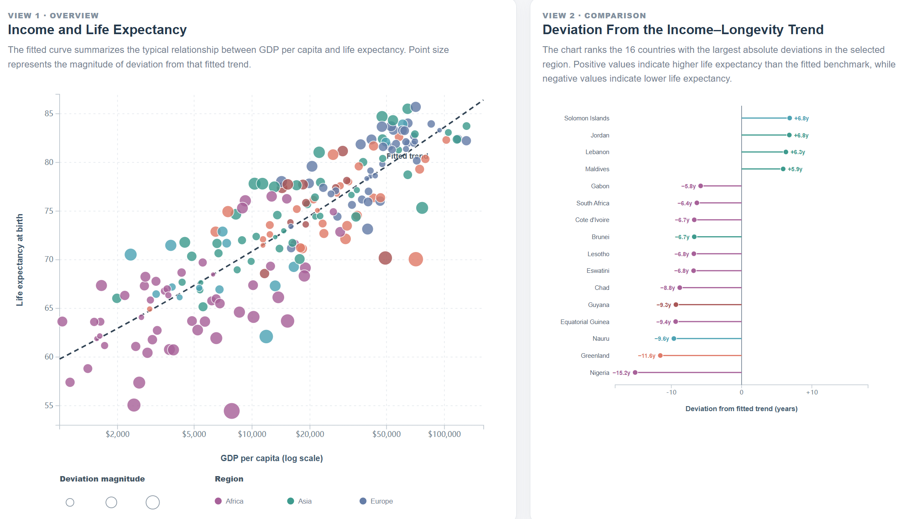

Original Visualization and Context
This project critiques and redesigns the Our World in Data visualization Life Expectancy vs. GDP per Capita, 2023. The original visualization uses a bubble scatterplot in which horizontal position represents GDP per capita, vertical position represents life expectancy, circle size represents population, and color represents world region.
The intended message is that countries with higher GDP per capita generally have higher life expectancy, although the relationship becomes weaker at high income levels. The visualization is intended for a broad audience, including general readers, students, researchers, and policy-interested users who want to compare countries or identify global patterns. Important user tasks include comparing GDP and life expectancy across countries, identifying regional patterns, locating unusual countries, and estimating how strongly income and longevity are related.
Critique
The visualization has several strengths. First, GDP per capita and life expectancy are encoded using horizontal and vertical position. Position is an effective visual channel for quantitative comparison, so the broad positive relationship between income and longevity is immediately visible. Second, the chart has high information density. In addition to the two main quantitative variables, color communicates region and bubble size communicates population, allowing multiple dimensions of the data to be explored simultaneously.
However, the design also creates several problems. First, population is encoded through circle area. Area is useful for rough magnitude judgments, but it is difficult to compare precisely, and very large bubbles can visually dominate nearby observations. Second, country labels become crowded in dense areas of the chart. Overlapping labels compete with the data marks and make individual countries harder to identify.
The most important limitation is that deviations from the overall income–longevity relationship are difficult to compare. The scatterplot clearly shows the general trend, but viewers must mentally estimate the vertical distance of each country from that trend. As a result, it is difficult to answer a more analytical question: which countries have unusually high or low life expectancy relative to countries with similar levels of income?
Redesign Rationale
My redesign changes the focus from simply observing correlation to identifying and comparing deviations from the typical income–longevity relationship.
The first major change is the use of a fitted curve based on a quadratic regression of life expectancy on log-transformed GDP per capita. This curve provides a descriptive benchmark for the relationship between income and life expectancy. It is not intended as a causal model; instead, it helps users see whether individual countries lie above or below the overall pattern.
Second, population no longer determines circle size. Instead, circle size represents the absolute deviation from the fitted trend. Countries with unusual life expectancy values therefore become more visually salient. Population is still available in the tooltip, but it no longer competes with the primary analytical task.
Third, I added a coordinated ranking view. The second chart converts each country's vertical deviation from the fitted curve into a directly comparable value measured in years. It displays the countries with the largest absolute deviations, making unusual cases easier to rank and compare.
Finally, the redesign includes linked interaction and regional filtering. Hovering over a country highlights it across both views, while region buttons allow the viewer to focus on a specific geographic group without losing the overall structure of the visualization.

Original vs. Redesign
The original visualization is effective for showing the overall relationship between GDP per capita and life expectancy. The redesign preserves this overview but makes outliers and deviations much easier to identify and compare. The fitted curve provides a reference baseline, deviation-based point size directs attention toward unusual countries, and the linked ranking converts visual distance into explicit quantitative values.
A trade-off is that population is no longer visible immediately through bubble size. Instead, it is available through interaction. This reduces the number of simultaneous visual encodings, but it better supports the redesigned task of understanding how countries differ from the typical income–longevity pattern.
References
Our World in Data. Life Expectancy vs. GDP per Capita, 2023. Data sources reported by the original visualization include the United Nations, World Population Prospects, Eurostat, OECD, IMF, and World Bank.
https://ourworldindata.org/grapher/life-expectancy-un-vs-gdp-per-capita-wb